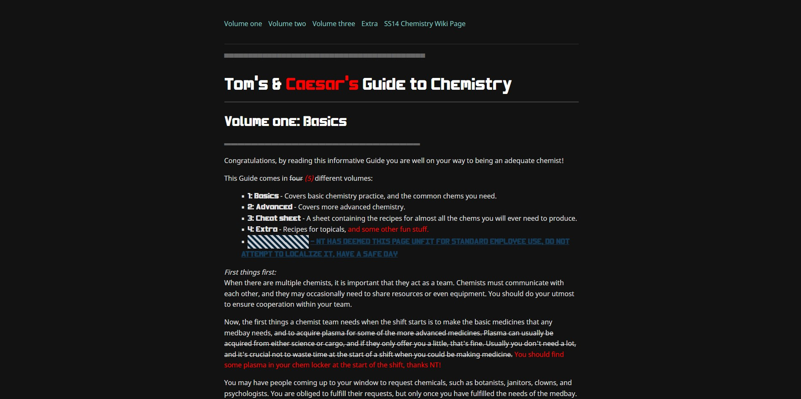

Individuellt webbprojekt [Tom's & Caesar's Guide to Chemistry]
Roll: Designer & utvecklare
En webbguide jag byggde själv från grunden. Fokus på att lära ut information om ett indie spel.
Jag skapar interaktiva webbupplevelser där design, funktion och känsla samverkar. Jag skapar också konstnärliga 3D-renderingar i Blender.
Jag vill jobba inom spel eller webbbranschen som UX-designer eller fullstack utvecklare. Jag gillar att ta en idé från skiss till fungerande prototyp, att göra den användbar, visuellt unik och tekniskt robust.
Jag har jobbat i många grupprojekt inom webbutveckling, byggt egna webbaserade projekt och ägnar mig åt 3D-modellering med fokus på karaktärer på fritiden.
Roll: Designer & utvecklare
En webbguide jag byggde själv från grunden. Fokus på att lära ut information om ett indie spel.

Roll: Interaktivitet (JS) & backend
Ett grupprojekt där vi tog fram en prototyp som fetchar från en API, där den automatiskt filtrerar närliggande resturanger baserat på plats och filter.

Roll: Fullstack-utveckling (HTML, CSS, JS) & backend
Ett projekt med en klient på LNU där jag och ett team designade en ny sida för [Projekt: Iot-lab för SMF 2.0].
På fritiden ägnar jag mig åt 3D-modellering och rendering, med fokus på karaktärer och figurer. Jag tycker om att skapa egna scener genom att kombinera gratis modeller med min egna design och komposition. Utöver det har jag erfarenhet av att modellera, texturera och rigga mina egna objekt från scratch.
Mitt kreativa fokus ligger på konstnärliga kompositioner, där jag ofta eftersträvar en pixel-art-inspirerad stil direkt i Blender. Jag lägger stor vikt vid karaktärernas positionering, scenplanering och hur Blenders compositing-verktyg kan användas för att förverkliga en unik visuell stil vid varje skapelse.
Jag börjar med att definiera vad målgruppen försöker uppnå och varför; detta styr alla designbeslut genom projektets gång.
Jag tar fram wireframes / prototyper och testar användarflödet tidigt innan man lägger tid på detaljer.
Antingen kodar jag själv eller samarbetar med andra i teamet för att implementera det som testats och designats. Jag lägger fokus på skalbarhet och tydlighet om någon annan ska jobba vidare på min kod.
Jag justerar utifrån användar testad feedback och ser till att upplevelsen är tydlig, snabb och snygg, inte bara att “det funkar”.
Vill du prata om praktik, juniorroll eller samarbete?
Roll: Allt (design, frontend, funktionalitet)
Ett individuellt projekt där jag designade och utvecklade en webbapplikation från grunden. Jag byggde gränssnittet, strukturen och logiken. Fokus låg på en design som är enkel att läsa och informativ, samt att utveckla information från andra källor om mer nischade spelmekaniker för indie spelet Space Station 14.
Tekniskt använde jag HTML, CSS och JS. En utmaning var att implementera text animationer på en sida för att uppnå en "hacker effekt", som jag löste genom att med JavaScript applicera ett gaussiskt sudd över texten när man skrollar neråt, samt att slumpmässigt byta ut bokstäver i all text styckvis tills de formade sina korrekta meningar. (Fortfarande WIP)
Roll: Interaktivitet (JS) & backend
Jag jobbade med ett team och tog fram en fungerande prototyp som hämtar JSON data från en API och sedan dynamiskt renderar ut information om resturanger i kort. Den hämtar data baserat på användarens plats (geolocation) eller utplacerad position inom Småland / Öland. Användare kan spara och sortera resturangerna i anpassningsbara kategorier, samt spela ett "Tinder-liknande spel" spel för att få ut en kategori av mat som de gillar mest. Det finns också en sida där man kan söka efter alla resturangers namn/kategorier.
Det var ett tufft men extremt lärorikt projekt som gav mig många lärdomar i dynamisk fetching, sortering av stora mängder data samt att jobba effektivt med andra programmerare i ett mindre team. Vi strukturerade upp våra arbetsuppgifter och deadlines på ett agilt samt flexibelt sätt för att lyckas med projektet.
Roll: Fullstack-utveckling (HTML, CSS, JS) & backend
Detta var ett projekt som pågick med en klient från Linnéuniversitetet där jag och två andra formade ett team och designade en prototyp som skulle visa upp deras pilotstudier och projekt på ett stiligt sätt. Här satt jag med implementeringen och visningen av all media på sidan, såsom bilder, videos, text o.s.v. Jag skapade också ett sökfält som filtrerar och dynamiskt renderar pilot studierna. Jag skapade också ett smidigt sätt att rendera ut de individuella projekten på en sida baserat på deras unika ID.
Jag jobbade med alla delar av projektet, från HTML, CSS och JS till data hantering i JSON format. Jag jobbade nära med en annan grupp medlem och vi kooordinerade våra arbetsområden och commits på ett väldigt harmoniskt sätt. Både klienten och teamet var väldigt nöjda med vår slutprototyp.